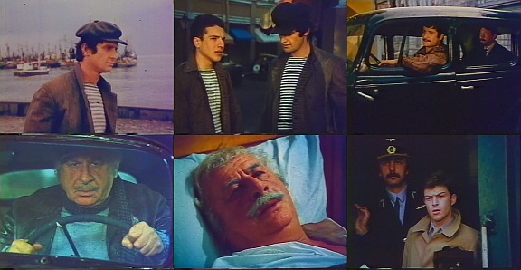

ფესვები
„ფესვები“ — ქართული მხატვრული ფილმი, კინოსტუდია „ქართული ფილმის“ ნაწარმოები, 1987 წელი.
გადაღება დაიწყო 1985 წლის იანვარში და დამთავრდა 1987 წლის სექტემბერში. ფილმი შეიქმნა სულიკო ჟღენტის ამავე სახელწოდების ორიგინალური სცენარის მიხედვით.
ნატვრის ხე